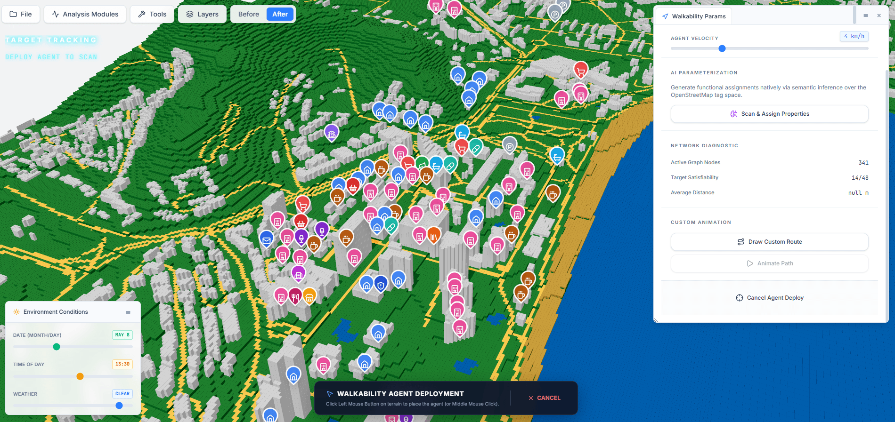
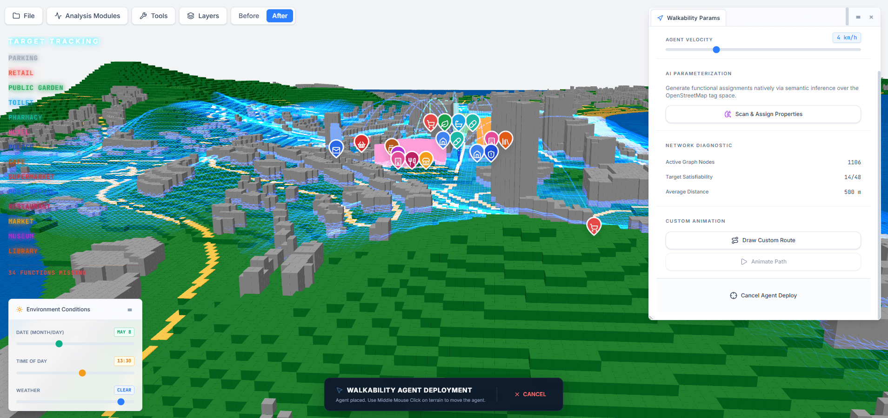
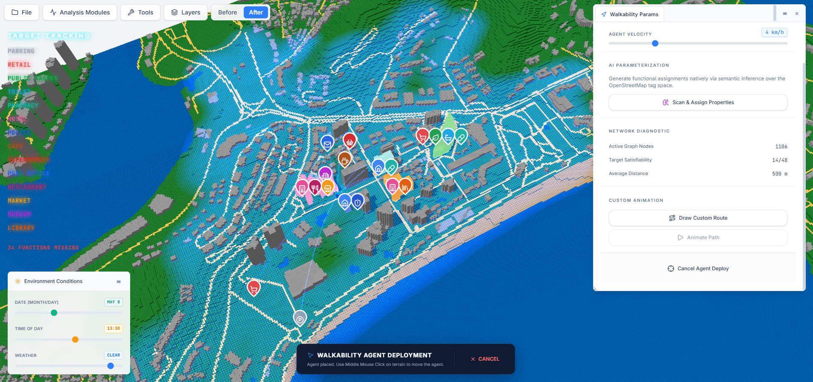
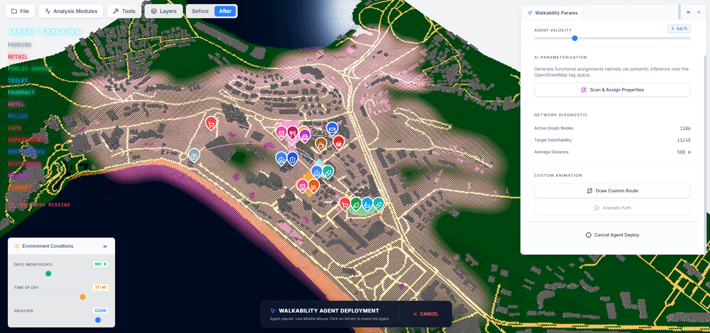
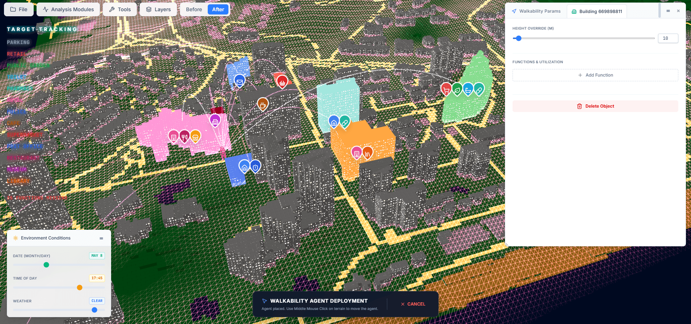
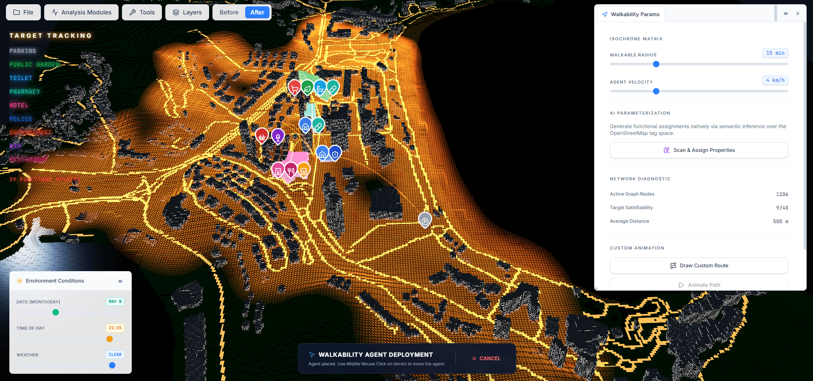

Urban 3D Analysis
An interactive 3D analytics platform that reads any neighbourhood from OpenStreetMap and evaluates how walkable and how well-ventilated it really is — entirely in the browser, backed by local AI.
Overview
A · What it isUrban 3D Analysis is a self-contained urban-analytics environment that pairs a modern WebGL interface with locally-accelerated AI. It pulls a city's real geometry — buildings, streets, terrain and water — straight from OpenStreetMap, voxelises it into an explorable 3D model, and then runs two analytical pipelines over it without sending anything to the cloud.
The whole toolchain is designed to run offline and dependency-free: a portable Python sandbox boots a FastAPI + ONNX backend while a React-Three-Fiber front end renders the city, so the heavy computation stays on the user's own machine.
Analytical Modules
B · Two pipelinesArchitecture
C · How it's builtThe front end is built on React-Three-Fiber, rendering the city through instanced WebGL meshes with Zustand driving background AI chunking and app-wide state, bundled by Vite with a Tailwind-styled, data-dense interface. The back end wraps ONNX model predictions in a FastAPI/Uvicorn service, with the astral-uv package manager sandboxing every Python dependency so the app installs and runs without touching the user's system.
Role
Albert Sumin — concept, UX, 3D pipeline & implementation
Frontend
React-Three-Fiber · Zustand
Vite · TailwindCSS
Backend
FastAPI · ONNX Runtime · astral-uv
Data & AI
OpenStreetMap · Overture Maps
Gemini tag inference · Eddy3D GAN
Interface
D · Screens




